Nosso Portfólio
Empresas que já passaram pela Koinz
Empresas que a Koinz Capital ajudou a crescer com capital intelectual estratégico, governance e conexões globais.
Destrave seu crescimento com capital intelectual
A Koinz Capital forma conselhos consultivos de alto nível para startups em early e growth-stage. 24 meses de acesso total ao rede global: +150 conselheiros, C-Levels, VP's, founders e investidores.
Sobre a Koinz Capital
A Koinz Capital é um fundo global de capital intelectual que investe em empresas com alto potencial de crescimento. O investimento acontece por meio de um conselho consultivo formado por cinco membros de alto renome — C-Levels, VPs e fundadores com passagem por Apple, Revolut, Cora, Microsoft, Google, Meta, Alibaba e outras referências globais. Além de acesso total à rede global da Koinz Capital
→ Aplicar no BatchEscalar é difícil. Escalar sozinho é mais ainda.
Por que a Koinz
Formamos conselhos de 3 a 5 conselheiros selecionados por um matching na necessidade específica da sua empresa — go-to-market, funding, produto, operações ou expansão internacional.
Acesso a uma rede de +150 conselheiros em +12 países, +15 operating partners, investidores de venture capital, family offices e HNWI — além de parceiros em tecnologia, jurídico e finanças.
Durante 24 meses sua empresa tem acesso ao ecossistema completo Koinz: gestor de portfólio, mentorias de pitch, conexões comerciais e suporte integral em captações nacionais e internacionais.
Empresas do portfólio da Koinz Capital, possuem a possibilidade de acessar nossa rede global com o objetivo de captar recursos dos conselheiros interessados.
Modelo de Investimento
O investimento é feito em formato de capital intelectual, com entrega contínua por meio de um conselho consultivo estruturado e orquestrado pela Koinz.
Seleção baseada nos desafios e objetivos da empresa: go-to-market, funding, produto, operações, expansão, compliance, financeiro...
A Koinz orquestra toda a dinâmica de conselho, entregando alinhamento, ritmo e conexões ao longo de toda a jornada.
Modelo de Compensação
Para cada empresa é formada uma proposta considerando variáveis. Operamos com três formas de compensação complementares.
Pelo investimento de capital intelectual via conselho, a empresa concede à Koinz uma opção de compra exercível em até 10 anos — alinhando os interesses de longo prazo de ambos os lados.
Pelo suporte integral na estruturação e ida a mercado para captação, é concedida à Koinz uma taxa sobre o aporte externo realizado. Inclui apenas captações viabilizadas pela Koinz.
A Taxa de Engajamento é uma contrapartida mensal que formaliza o compromisso mútuo entre a empresa e a Koinz.
Para alinhamento de sucesso, empresa e Koinz acordam métricas com bonificações em caso de atingimento. Mensalidade variável de acordo com estágio e porte da empresa.
Critérios de Seleção
Buscamos empreendedores ambiciosos com alto potencial de crescimento, desde o MVP até a todo o processo de crescimento. O requisito principal: time comprometido e disposição para elevar o negócio para o proximo nível.
Buscamos equipes com pelo menos 2 integrantes, sendo 1 deles dedicado integralmente ao negócio.
Atuamos com empresas desde o MVP até empresas em estruturação de vendas e expansão internacional de mercado.
Empresas que buscam crescimento acelerado: expansão de mercado, captação de investimentos ou eventos de M&A.
Jornada Koinz
Em uma sessão individual, a empresa apresenta sua tese de negócio e principais métricas diretamente para a equipe de análise da Koinz..
As informações do pitch são levadas a um comitê interno, que avalia o potencial da empresa e a capacidade real da Koinz de agregar valor ao negócio.
Com base no estágio, nas necessidades e nos objetivos mapeados, a Koinz encaminha uma proposta estruturada e adequada ao momento da empresa.
Após a análise e alinhamento dos termos, as partes formalizam o acordo e seguem para a assinatura do contrato.
A empresa realiza um pitch para os conselheiros interessados, que se candidatam à vaga. A empresa recebe a relação dos candidatos e seleciona quem fará parte do seu conselho.
Durante todo o período de parceria, a empresa conta com acompanhamento ativo, acesso à rede Koinz, conexões estratégicas e mentorias contínuas.
Nossa Rede
C-Levels, VPs e fundadores com passagem pelas empresas mais relevantes do mundo investindo capital intelectual nas empresas do portfólio.









Ecossistema
Conexões com Family Offices, HNWI, fundos de venture capital e private equity. Suporte em captações nacionais e internacionais, desde alinhamento de pitch até fechamento de rodada.
Melhores práticas em gestão de fluxo de caixa, planejamento financeiro, conformidade fiscal e auditorias. Parceiros como General Finance e Fund Focus.
Questões legais, contratos, propriedade intelectual, compliance regulatório e litígios. Proteção dos interesses da empresa em todas as etapas de crescimento.
Parcerias com startups e fornecedores de soluções tecnológicas, incluindo AWS Activate Provider. Acelere o desenvolvimento de produto e otimize operações.
Conecte-se com outros fundadores do portfólio para trocas de experiências, insights e apoio mútuo criando um ecossistema de colaboração e inovação.
Suporte para fortalecer a marca, posicionar produtos e melhorar a comunicação com o público-alvo em diferentes mercados e geografias.
Nosso Portfólio
Empresas que a Koinz Capital ajudou a crescer com capital intelectual estratégico, governance e conexões globais.
Depoimentos
Depoimentos de founders que cresceram dentro do ecossistema Koinz Capital.
Encerro meu ciclo na residência com equipe formada, protótipo funcional e arquitetura técnica definida, fruto de uma colaboração profunda com o time e o advisory board da Koinz. Tive papel ativo nas decisões estratégicas de tecnologia para estruturar minha tese de IA. O programa foi o acelerador definitivo para transformar uma ideia inicial em uma tese madura e pronta para o mercado.
Estamos em uma fase de escala rápida no Ginastee, com crescimento acelerado de usuários e receita, e isso gerou um custo significativo de infraestrutura em Cloud. Graças ao incentivo da Koinz, conseguimos créditos na AWS fundamentais para sustentar essa fase. O suporte vai muito além do capital, é parceria de verdade no dia a dia do crescimento.
Hoje posso avaliar a importância de ter um conselho desde o momento early stage e poder contar com diversas habilidades e, de certa forma, mitigar riscos podendo compartilhar dúvidas ou decisões que o founder tomaria de forma solitária. O conselho acelera o seu avanço ao próximo estágio.
Desde outubro, a Koinz transformou nossa jornada na Move in Tech. Através do conselho, conectamos com clientes e parceiros estratégicos que aceleraram nosso crescimento em um momento em que mal tínhamos o MVP pronto. A Koinz não só abriu portas, mas facilitou o acesso a capital e a novas ideias quando mais precisávamos. Só gratidão pelo apoio que nos forneceram ao longo dessa jornada.
Dúvidas Frequentes
A Koinz é agnóstica em sua tese de investimento. Buscamos para o nosso portfólio empresas em que nossa rede de conselheiros possa agregar valor por meio de suporte estratégico, estruturação e conexões relevantes.
No processo de análise, o comitê da Koinz avalia critérios como tração, modelo de negócio, qualidade do time, tamanho de mercado e capacidade de execução, sempre com foco em onde nossa rede de conselheiros pode gerar mais valor.
O Operating Partner atua como gestor do conselho e de todo o processo de acompanhamento da empresa. Ele monitora a jornada da startup de ponta a ponta, facilita conexões, coordena trocas e adições de conselheiros conforme a necessidade do negócio, e também integra diretamente a rede como conselheiro ativo.
A Koinz, como instituição, não realiza aportes diretos. No entanto, possuímos modelos que apoiam a captação para empresas do portfólio, incluindo acesso à nossa rede de investidores e suporte em processos de captação nacionais e internacionais.
Não. O nosso foco é apoiar a empresa em toda a jornada empreendedora. O acesso à rede de captação foi criado para somar valor às empresas do portfólio, mas o core da Koinz é o desenvolvimento estratégico completo, não apenas a captação de recursos.
Batch 2025.2 — Vagas Limitadas
As inscrições para o Batch 2025.2 estão abertas. Vagas limitadas para empresas com alto potencial de crescimento.